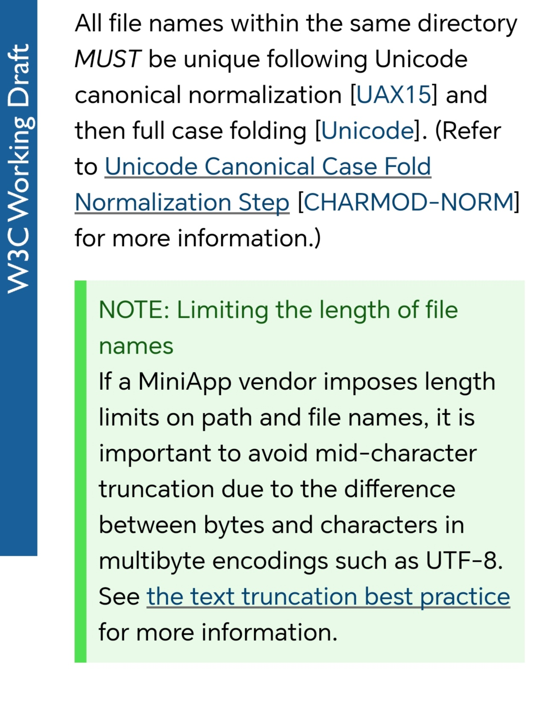

Leaving slide mode.
MiniApp Standardization - Opportunities and Challenges
Martin Alvarez-Espinar
ACM Workshop on Secure and Trustworthy Superapps (SaTS)
Co-located with ACM CCS 2024
Salt Lake City, USA
14 October 2024
Me
#developer #interoperability #EU #w3c #huawei #standards
Contents
- How it all started
- MiniApp standardization
- Status of the specs
- Challenges
Light apps ecosystem

Light apps

Challenges
- Development: how to code my MiniApp for n+1 SuperApps
- Specific elements, APIs, ...
- Scripts, third-party libraries...
- Architecture and performance
- Publication: how to deliver it on different platforms (i.e., registration, validation, maintenance)
- Versioning and maintenance...
I wish...
coding ~once, run everywhere...
Based on Web
<template>
<div class="main-page">
<text class="title">{{title}}</text>
<input type="button" onclick="changeText" />
</div>
</template>
Based on Web
<template>
<div class="main-page">
<text class="title">{{title}}</text>
<input type="button" onclick="changeText" />
</div>
</template>
But... we don't interact directly with DOM
<script>
export default {
private: {
title: 'This is a quick app'
},
changeText () {
this.title = 'hello world'
}
}
</script>
But... we don't interact directly with DOM
<script>
export default {
private: {
title: 'This is a quick app'
},
changeText () {
this.title = 'hello world'
}
}
</script>
And... Wait!
<template>
<div class="main-page">
<text class="title">{{title}}</text>
<input type="button" onclick="changeText" />
</div>
</template>
Contents
- How it all started
- MiniApp standardization
- Status of the specs
- Challenges
We decided to create a homogeneous ecosystem

Standards to:
- Develop and distribute MiniApps
- Develop MiniApp user agents (SuperApps)
- Converge with the Web Platform
World Wide Web Consortium
- Created 30 years ago! by Sir Tim Berners-Lee (now W3C Inc.)
- 680+ standards* in 113 technology domains
- 364 Member organizations
Organization
- CEO + Board of Directors + supporting Staff
- Advisory Committee or AC - 364 reps. (one member, one vote)
- Advisory Board or AB: strategy
- Technical Architecture Group or TAG: technical guidance
Technical Reports, including Recommendations and Group Notes
How the work is done?
Members propose topics, work on them through
- Interest Groups (10 IG): requirements (e.g., Web Payments Security IG)
- Business Groups (2 BG): high-level reqs for verticals (e.g., Entertainment)
- Working Groups (43 WG): technical standards (e.g., CSS WG)
- Community Groups (143 CG): public incubation discussions (e.g., Web Incubation Community Group - WICG)
Liaisons with other SDOs
Ecma International, FIDO, ISO...
MiniApps @ W3C back in 2019
WG Charter

WG Charter: background

WG Charter: scope

WG Charter: deliverables

WG Charter: success

WG Charter: Patent Policy

Deliverables: Working Drafts
How do we create a new spec?
First step for a new proposal: explainer
Objectives, use cases, scope, first proposal...
Definitions, processing algorithms, WebIDL descriptions...
Also practical support

Notes for developers to help implementations
I18n and accessibility in every spec
Horizontal review to preserve the principle of a Web for everyone (i.e., independently of culture, physical, functional and cognitive capabilities of the users)
Security in every spec
Horizontal review to minimize the threats in every specification (i.e., sandbox, threat model...)
Privacy in every spec
Horizontal review to preserve user's privacy in every specification (i.e., keep sandboxed environment, avoid tracking users...)
Success criteria: we need tests
Process (stages of a spec)
Specs are horizontally reviewed on i18n, a11y, privacy and security.
The Technical Architecture Group (TAG) plays an important role
Contents
- How it all started
- MiniApp standardization
- Status of the specs
- Challenges
MiniApp Lifecycle
Specific events and an interface for the MiniApp object and its pages
MiniApp lifecycle:
launched, shown, hidden, error…
Page lifecycle:
loaded, ready, shown, hidden, unloaded
Status: WD
MiniApp Addressing
URIs for MiniApps
platform://miniapp/foo;version=1.0.1/pages/index?k=v#bar
https://platform.org/miniapp/foo;version=1.0.1/pages/index?k=v#bar
Status: Group Draft Note
MiniApp Manifest
JSON document to describe a MiniApp
- Based on Web App Manifest (
extends)
- 15 attributes with metadata for UA and publishers (icons, versions…)
- Runtime configuration (themes, colors, orientation…)
- Including permissions (i.e., sensors, network…) and discussing CSP
Status: WD
Content Security Policy (CSP)
Increase security and integrity of MiniApps
- The system caches the MiniApp, and user agents do not always have access to HTTP headers.
- We need to guarantee security and avoid content and scripts from non-trusted origins.
Manifest CSP
Reuse of ongoing IWA proposal?
Content-Security-Policy: base-uri 'none';
default-src 'self';
object-src 'none';
frame-src 'self' https: blob: data:;
connect-src 'self' https: wss: blob: data:;
script-src 'self' 'wasm-unsafe-eval';
img-src 'self' https: blob: data:;
media-src 'self' https: blob: data:;
font-src 'self' blob: data:;
style-src 'self' 'unsafe-inline';
require-trusted-types-for 'script';
Open discussion
MiniApp Packaging
Describes the logical and physical structure of a MiniApp
- Pages, components, styles,…
- Packaging format, file-system, directories…
- Digital signatures (for developer, publishers, others…) - Optional
Status: WD
Types of Resources

Pages & Components
- HTML: based on templates
- JS: ECMAScript profile
- CSS: CSS profile
- Resources for i18n
Current proposal: based on Web Components
File System
Homogeneous structure:
manifest.json: metadata, setupapp.js, app.css: global logic, stylespages/: page resourcescommon/: shared media, script resources i18n/: localization of content
Contents
- How it all started
- MiniApp standardization
- Status of the specs
- Challenges
#1: ZIP container
Raised concern of lack of efficiencyß
- Assessment based on existing implementations
- Availability of tooling
- Widely accepted format
#2: Origin model preservation
- MiniApps can be distributed in different ways (i.e., other than HTTP)
How to keep track of the origin?
#2: (Origin model) discussions
- UA
SHOULD use SSL/TSL for distribution
- Package
SHOULD be signed by the origin
- UA
SHOULD keep track of the origin (e.g., save it in manifest?, UA decides?)
???
#3: Guarantee secure context
- MiniApps can be distributed in different ways (i.e., other than HTTP)
- UA platforms usually control distribution (i.e., root of trust, versioning)
- UA platforms generally limit access to external resources.
How to guarantee integrity?
#3: (Integrity) ongoing discussions
Based on the existing solution:
- Package
SHOULD be hashed (integrity);
- and
SHOULD be signed (e.g., developer + publisher)
- Who does the rest? (e.g., the UA platform?)
Ongoing
discussion.
Follow IWA approach?
- CBOR-based container and distributed through HTTPS
- Signed Web Bundles + proposing a new Integrity Block
integrity-block = [
magic: h'F0 9F 96 8B F0 9F 93 A6',
version: bstr .size 4, ; Version value is '2\0\0\0' for release.
attributes: {
"webBundleId" => tstr
}
signature-list: [ +integrity-signature ]]
Also, defining permissions in manifest and CSP
May we standardize a global security model for SuperApps?
We need your help!
- Origin model preservation
- Secure context (integrity)
- Content security policy
- Permission management
- ...
Thank you!!
Martin Alvarez (@espinr)
To start the slide show, press ‘A’. Return to the index with ‘A’ or ‘Esc’. On a touch screen, use a 3-finger touch. Double click to open a specific slide. In slide mode, press ‘?’ (question mark) to get a list of available commands.